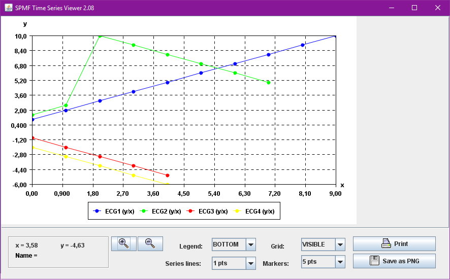

Vizualize time series using the time series viewer (SPMF documentation)
This example explains how to run the time series viewer using the SPMF open-source data mining library.
How to run this example?
- If you are using the graphical interface, (1) choose the "Visualize_time_series" algorithm, (2) select the input file "contextSAX.txt", (3) set the separator to the comma ',' and (4) click "Run algorithm".
- If you want to execute this example from the command line,
then execute this command:
java -jar spmf.jar run Vizualize_time_series contextSAX.txt ,
in a folder containing spmf.jar and the example input file contextSAX.txt. - If you are using the source code version of SPMF, to run respectively this example, launch the file "MainTestPHM.java"in the package ca.pfv.SPMF.tests.
What is the time series viewer?
The time series viewer is a tool offered in SPMF for visualizing one or more time series using a chart. The time series viewer provides some basic functions like zooming in, zooming out, printing, and saving the picture as an image.
What is the input of the time series viewer?
The input is one or more time series. A time series is a sequence of floating-point decimal numbers (double values). A time-series can also have a name (a string).
Time series are used in many applications. An example of time series is the price of a stock on the stock market over time. Another example is a sequence of temperature readings collected using sensors.
For this example, consider the four following time series:
| Name | Data points |
| ECG1 | 1,2,3,4,5,6,7,8,9,10 |
| ECG2 | 1.5,2.5,10,9,8,7,6,5 |
| ECG3 | -1,-2,-3,-4,-5 |
| ECG4 | -2.0,-3.0,-4.0,-5.0,-6.0 |
This example time series database is provided in the file contextSAX.txt of the SPMF distribution.
To run the time series viewer, it is also necessary to indicate the "separator", which is the character used to separate data points in the input file. In this example, the "separator" is the comma ',' symbol.
What is the result of running the time series viewer?
Running the time series viewer will display the time series visually. For example, for the above time series database, the time series will be displayed as follows (note that this may vary depending on your version of SPMF):

Input file format
The input file format used by the time series viewer defined as follows. It is a text file. The text file contains one or more time series. Each time series is represented by two lines in the input file. The first line contains the string "@NAME=" followed by the name of the time series. The second line is a list of data points, where data points are floating-point decimal numbers separated by a separator character (here the ',' symbol).
For example, for the previous example, the input file is defined as follows:
@NAME=ECG1
1,2,3,4,5,6,7,8,9,10
@NAME=ECG2
1.5,2.5,10,9,8,7,6,5
@NAME=ECG3
-1,-2,-3,-4,-5
@NAME=ECG4
-2.0,-3.0,-4.0,-5.0,-6.0
Consider the first two lines. It indicates that the first time series name is "ECG1" and that it consits of the data points: 1, 2, 3, 4, 5, 6, 7, 8, 9, and 10. Then, three other time series are provided in the same file, which follows the same format.
Implementation details
The time series viewer has been implemented by reusing and extending some code provided by Yuriy Guskov under the MIT License for displaying charts.